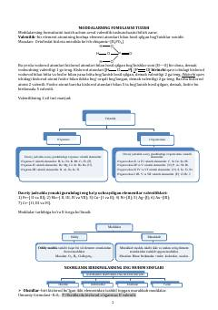

KMNoorganik kimyoda moddalar formulalarini tuzish bo'yicha o'quv qo'llanma.
Ushbu qo'llanma noorganik kimyoda moddalarning kimyoviy formulalarini tuzish qoidalarini tushuntiradi. Unda valentlik tushunchasi, oksidlar, gidroksidlar va kislotalarning tasnifi hamda ularning grafik formulalarini hosil qilish usullari batafsil bayon etilgan.